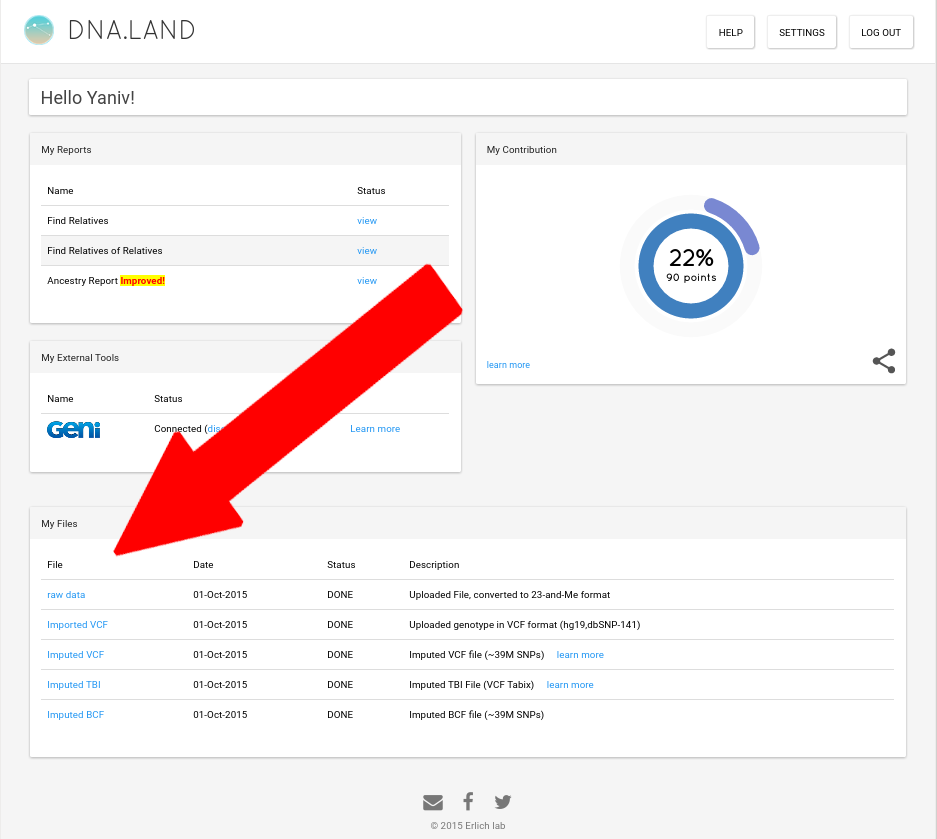
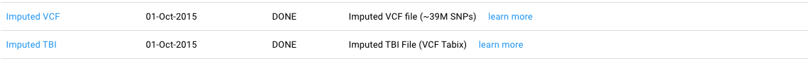
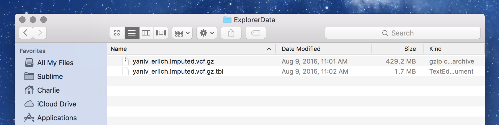
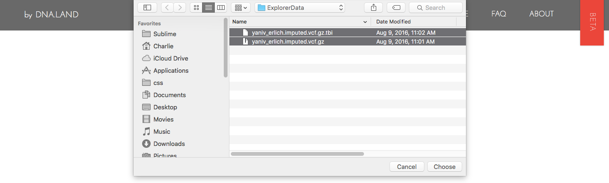
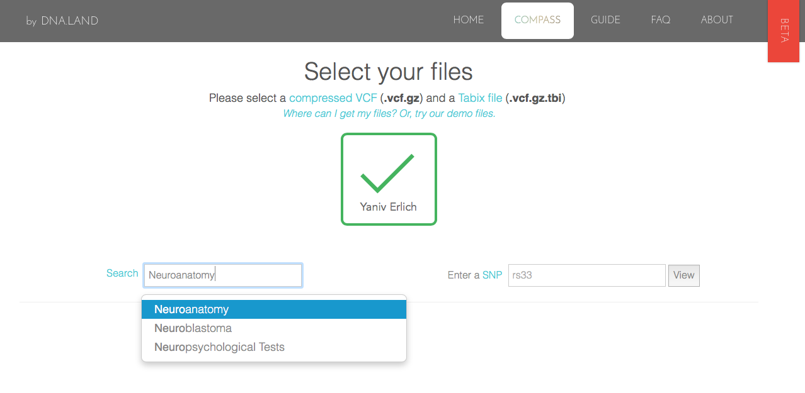

If you already have a matching compressed VCF (.vcf.gz) and Tabix file (.tbi) or you would like to use the sample data we offer, please skip to the next step.
Otherwise, go to DNA.Land and sign in.

Scroll to the "My Files" section. Download both of the following:

These can be found in the "My files" section of the page.
These files will likely go into your downloads folder.
Locate your files
Please be sure you have a compressed VCF (.vcf.gz) and a corresponding Tabix file (.tbi) located in the same folder on your computer.
If you do not have access to these files, we do offer a set of sample files with which users can experiment:
Your files' names should be in one of the following formats:
XXXX.vcf.gz and XXXX.vcf.gz.tbi
XXXX.imputed.vcf.gz and XXXX.imputed.vcf.gz.tbi
Ultimately, you should have a folder like this:

Open Compass
In a browser, go to compass.dna.land. Click once on the beige cloud icon, and navigate to the folder where you've saved your files. While holding down Shift ⇧ or Command ⌘ on your keyboard, select both the .vcf.gz and the .tbi.

Search for SNPs
Enter an rsID in the box on the left, or choose a category of SNPs from the dropdown on the right.

Once the SNPs have loaded, scroll through the list on the left until you find a SNP you're interested in. Then use the light blue tabs below to search through various resources for it.